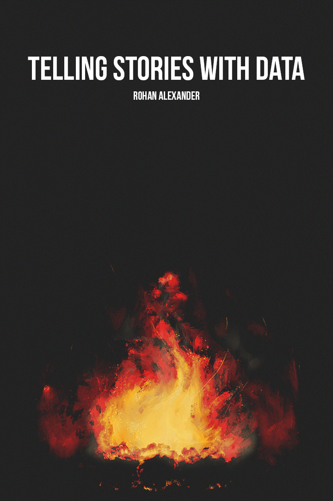

데이터로 이야기하기
R과 Python을 활용한 애플리케이션과 함께

추천사
이 깔끔하고 재미있는 책은 통계 커뮤니케이션, 프로그래밍, 모델링에 대한 광범위한 주제를 다루며, 어떤 통계 과정이나 독학 프로그램에도 유용한 보충 자료가 될 것입니다. 저는 이 책을 정말 좋아합니다!
앤드류 겔만(Andrew Gelman), 컬럼비아 대학교, 회귀 및 기타 이야기 저자
훌륭한 책입니다. 통계학에서 커뮤니케이션과 재현성은 점점 더 중요해지고 있으며, 이 책은 이러한 주제들을 실용적이고 매력적이며 진정으로 독특한 방식으로 다룹니다.
다니엘라 위튼(Daniela Witten), 워싱턴 대학교, 통계 학습 입문 저자
많은 데이터 과학 서적들이 형식적인 계산을 수행하는 방법을 알려줍니다. 대신, 데이터로 이야기하기는 분석의 사고방식과 과정에 참여하는 방법을 알려줍니다. 이 책은 학생들이 의미를 파악하고 이야기를 전달하는 데 필요한 계산, 통계 및 철학적 기술을 갖추게 함으로써 독특하게 실용적이고 힘을 실어주는 책으로 돋보입니다.
에밀리 리더러(Emily Riederer), 캐피탈 원, R 마크다운 쿡북 저자
데이터로 이야기하기는 데이터를 사용하여 배우고 긍정적인 변화를 이끌어내는 사려 깊은 가이드입니다. 이 책은 프로세스의 각 단계를 포함하며, 많은 데이터 과학자와 미래의 데이터 스토리텔러에게 오래 지속되는 동반자가 될 수 있습니다.
크리스토퍼 피터스(Christopher Peters), 재피어
이것은 또 다른 통계 책이 아닙니다. 그보다 훨씬 낫습니다. 양적 연구, 과학적 정당화, 품질 관리, 커뮤니케이션 및 인식론적 겸손에 대한 책입니다. 어떤 방법론 커리큘럼에도 귀중한 보충 자료이며, 독학하는 사람들에게도 유용합니다.
리처드 맥엘리스(Richard McElreath), 막스 플랑크 진화 인류학 연구소, 통계적 재고 저자
영리한 직업 선택은 성장하는 자원과 자신의 기술이 상호 보완적인 분야를 선택하는 것입니다. 앞으로 수십 년 동안 데이터를 분석하는 데 능숙한 사람들은 번성할 것입니다. 이는 통계를 분석하고 설득력 있는 이야기를 전달하는 것을 의미합니다. 로한 알렉산더의 책은 이 두 가지를 모두 할 수 있도록 도와줄 것입니다.
앤드류 리(Andrew Leigh), 호주 의회 의원, 랜덤니스타스: 급진적인 연구자들이 우리 세상을 바꾸는 방법 저자
모든 데이터 분석가는 데이터로 이야기를 해야 하지만, 전통적인 교과서는 통계적 방법론에만 초점을 맞춥니다. 데이터로 이야기하기는 데이터 수집, 커뮤니케이션, 재현성을 포함한 전체 데이터 과학 워크플로우를 가르칩니다. 이 독특한 책을 강력히 추천합니다!
코스케 이마이(Kosuke Imai), 하버드 대학교, 양적 사회 과학: 입문 저자
이 책은 데이터 과학을 시작하는 모든 사람에게 현명한 조언으로 가득 찬 특별하고 훌륭한 책입니다. 개념과 코드를 혼합하여 아이디어를 즉시 구체화하고, 재현 가능한 워크플로우에 대한 강조는 빠르게 발전하는 분야에 엄격함을 더합니다.
데이비드 스피겔할터 경(Sir David Spiegelhalter), 케임브리지 대학교, 통계의 예술 저자
(진실된) 데이터로 이야기하기는 화려한 통계 모델과 빅데이터 이상의 것을 요구합니다. 로한 알렉산더는 일련의 매혹적인 사례 연구를 통해 좋은 질문을 하고, 데이터를 획득하고, 모델을 추정하고, 결과를 전달하는 방법을 가르쳐줍니다. 이 전체론적 접근 방식은 명확하고 매력적인 산문으로 설명됩니다. 이 책의 페이지는 투명성과 재현성의 중요성을 강조하는 상세한 R 예제로 가득합니다. 저는 이 책을 정말 좋아하며 모든 학생들에게 추천합니다.
빈센트 아렐-번독(Vincent Arel-Bundock), 몬트리올 대학교, 인과 분석 및 양적 방법 저자
서문
이 책은 데이터를 통해 이야기를 전달하는 데 도움을 줄 것입니다. 이 책은 여러분이 관찰한 데이터를 기반으로 관심 있는 세상의 한 측면에 대한 지식을 구축하고 공유할 수 있는 토대를 마련합니다. 불 주위에 작은 그룹으로 이야기를 나누는 것은 인간과 사회의 발전에 중요한 역할을 했습니다 (Wiessner 2014). 오늘날 데이터에 기반한 우리의 이야기는 수백만 명에게 영향을 미칠 수 있습니다.
이 책에서 우리는 데이터를 탐색하고, 조사하고, 밀어붙이고, 조작하고, 반죽하고, 궁극적으로는 그 함의를 이해하려고 노력할 것입니다. 다양한 특징들이 이 책의 선택을 이끌어냅니다.
제가 박사 학위를 받은 대학의 모토는 naturam primum cognoscere rerum 또는 대략 “사물의 본질을 먼저 배우는 것”입니다. 그러나 원래 인용문은 temporis aeterni quoniam 또는 대략 “영원한 시간을 위해”로 이어집니다. 우리는 이 두 가지를 모두 할 것입니다. 저는 지속적이고 재현 가능한 지식을 구축할 수 있도록 하는 도구, 접근 방식 및 워크플로우에 중점을 둡니다.
이 책에서 데이터에 대해 이야기할 때, 일반적으로 인간과 관련될 것입니다. 인간은 우리 이야기의 대부분의 중심에 있을 것이며, 우리는 사회적, 문화적, 경제적 이야기를 할 것입니다. 특히, 이 책 전체에서 저는 사회 현상과 데이터 모두에서 불평등에 주목할 것입니다. 대부분의 데이터 분석은 세상을 있는 그대로 반영합니다. 가장 취약한 사람들 중 많은 이들이 이 점에서 이중 부담에 직면합니다. 즉, 불이익을 받을 뿐만 아니라 그 정도를 측정하기가 더 어렵습니다. 우리 데이터셋에 있는 사람들의 데이터를 존중하는 것이 주요 관심사이며, 우리 데이터셋에 체계적으로 포함되지 않은 사람들을 생각하는 것도 마찬가지입니다.
데이터는 종종 다양한 맥락과 분야에 특화되어 있지만, 데이터를 이해하는 데 사용되는 접근 방식은 유사한 경향이 있습니다. 데이터는 또한 점점 더 전 세계적으로 다양한 출처에서 자원과 기회를 얻을 수 있습니다. 따라서 저는 많은 분야와 지역의 예시를 활용합니다.
지식이 되려면 우리의 발견은 다른 사람들에게 전달되고, 이해되고, 신뢰되어야 합니다. 과학적, 경제적 진보는 다른 사람들의 작업을 기반으로 할 때만 이루어질 수 있습니다. 그리고 이것은 우리가 그들이 무엇을 했는지 이해할 수 있을 때만 가능합니다. 마찬가지로, 우리가 세상에 대한 지식을 창출하려면 다른 사람들이 우리가 무엇을 했는지, 무엇을 발견했는지, 그리고 우리의 작업을 어떻게 수행했는지 정확하게 이해할 수 있도록 해야 합니다. 따라서 이 책에서는 커뮤니케이션과 재현성에 대해 특히 규범적으로 다룰 것입니다.
양적 작업의 품질을 향상시키는 것은 엄청난 도전이지만, 그것은 우리 시대의 도전입니다. 데이터는 우리 주변에 있지만, 지속적인 지식은 거의 창출되지 않고 있습니다. 이 책은 작은 방식으로나마 그것을 바꾸는 데 기여하기를 바랍니다.
독자 및 예상 배경 지식
이 책을 읽는 일반적인 독자는 1학년 학부 통계학에 대한 약간의 지식이 있습니다. 예를 들어 회귀 분석을 실행해 본 경험이 있을 것입니다. 그러나 특정 수준을 대상으로 하지 않고, 거의 모든 양적 과정에 관련된 측면을 제공합니다. 저는 이 책을 학부, 대학원 및 전문 수준에서 가르쳤습니다. 모든 사람은 고유한 요구 사항이 있지만, 이 책의 어떤 측면이 여러분에게 도움이 되기를 바랍니다.
열정과 관심은 사람들을 멀리 이끌었습니다. 그것들이 있다면 다른 것에 대해 너무 걱정하지 마십시오. 가장 성공적인 학생들 중 일부는 양적 또는 코딩 배경이 없는 학생들이었습니다.
이 책은 많은 내용을 다루지만, 특정 측면에 대해 깊이 있게 다루지는 않습니다. 따라서 데이터 과학: 첫 번째 소개 (Timbers, Campbell, 와/과 Lee 2022), 데이터 과학을 위한 R (Wickham, Çetinkaya-Rundel, 와/과 Grolemund [2016년] 2023), 통계 학습 입문 (James 기타 [2013년] 2021), 통계적 재고 (McElreath [2015년] 2020)와 같은 더 자세한 책들을 특히 보완합니다. 이 책들에 관심이 있다면, 이 책이 좋은 시작점이 될 수 있습니다.
구성 및 내용
이 책은 여섯 부분으로 구성되어 있습니다: I) 기초, II) 커뮤니케이션, III) 획득, IV) 준비, V) 모델링, VI) 응용.
파트 I—기초—는 이 책으로 무엇을 달성하려는지, 왜 이 책을 읽어야 하는지에 대한 개요를 제공하는 sec-introduction으로 시작합니다. sec-fire-hose는 세 가지 예제를 통해 설명합니다. 이 예제들의 의도는 이 책에서 권장하는 전체 워크플로우를 무엇이 일어나는지에 대한 세부 사항에 너무 신경 쓰지 않고 경험할 수 있도록 하는 것입니다. 그 워크플로우는 계획, 시뮬레이션, 획득, 모델링, 그리고 커뮤니케이션입니다. 이 장의 모든 것을 처음부터 따르지 못하는 것은 정상적이지만, 직접 코드를 입력하고 실행하면서 진행해야 합니다. 이 책에서 한 장만 읽을 시간이 있다면, 저는 이 장을 추천합니다. sec-reproducible-workflows는 제가 옹호하는 워크플로우에서 사용되는 재현성을 위한 몇 가지 핵심 도구를 소개합니다. 여기에는 Quarto, R 프로젝트, Git 및 GitHub, 그리고 R을 실제로 사용하는 것과 같은 측면이 포함됩니다.
파트 II—커뮤니케이션—은 서면 및 정적 커뮤니케이션을 다룹니다. sec-on-writing은 양적 글쓰기가 가져야 할 특징과 명확한 양적 연구 논문을 작성하는 방법을 자세히 설명합니다. sec-static-communication의 정적 커뮤니케이션은 그래프, 표, 지도와 같은 기능을 소개합니다.
파트 III—획득—은 우리 세상을 데이터로 바꾸는 데 중점을 둡니다. sec-farm-data는 측정으로 시작하여 데이터에 대한 우리의 접근 방식을 지배하는 샘플링의 필수 개념을 단계별로 설명합니다. 그런 다음 인구 조사 및 기타 정부 통계와 같이 데이터로 사용하기 위해 명시적으로 제공되는 데이터셋을 고려합니다. 이들은 일반적으로 깨끗하고 잘 문서화되어 있으며 미리 패키지화된 데이터셋입니다. sec-gather-data는 API(응용 프로그래밍 인터페이스) 사용, 데이터 스크래핑, PDF에서 데이터 가져오기, OCR(광학 문자 인식)과 같은 측면을 다룹니다. 데이터는 사용 가능하지만 반드시 데이터셋으로 설계된 것은 아니며, 우리가 직접 가져와야 한다는 생각입니다. 마지막으로 sec-hunt-data는 우리에게 더 많은 것이 요구되는 측면을 다룹니다. 예를 들어, 실험을 수행하거나 A/B 테스트를 실행하거나 설문 조사를 해야 할 수도 있습니다.
파트 IV—준비—는 원본, 편집되지 않은 데이터를 탐색하고 공유할 수 있는 형태로 존중하며 변환하는 방법을 다룹니다. sec-clean-and-prepare는 데이터 정리 및 준비 작업에 접근할 때 따라야 할 몇 가지 원칙을 자세히 설명한 다음, 취해야 할 특정 단계와 구현할 검사를 설명합니다. sec-store-and-share는 R 데이터 패키지 및 파케트 사용을 포함하여 이러한 데이터셋을 저장하고 검색하는 방법에 중점을 둡니다. 그런 다음 데이터셋이 기반으로 하는 사람들을 존중하면서 가능한 한 광범위하게 데이터셋을 배포하고자 할 때 고려해야 할 사항과 취해야 할 단계를 계속 설명합니다.
파트 V—모델링—은 sec-exploratory-data-analysis의 탐색적 데이터 분석으로 시작합니다. 이것은 데이터셋을 이해하는 중요한 과정이지만, 일반적으로 최종 제품에 포함되지 않는 것입니다. 이 과정 자체로 목적이 있습니다. sec-its-just-a-linear-model에서는 데이터를 탐색하기 위한 선형 모델 사용이 소개됩니다. 그리고 sec-its-just-a-generalized-linear-model에서는 로지스틱, 포아송, 음이항 회귀를 포함한 일반화 선형 모델을 다룹니다. 또한 다단계 모델링도 소개합니다.
파트 VI—응용—는 모델링의 세 가지 응용을 제공합니다. sec-causality-from-observational-data는 관찰 데이터에서 인과 관계 주장을 하는 데 중점을 두며, 차이-차이, 회귀 불연속성, 도구 변수와 같은 접근 방식을 다룹니다. sec-multilevel-regression-with-post-stratification은 사후 계층화 다단계 회귀를 소개하는데, 이는 통계 모델을 사용하여 알려진 편향에 대해 샘플을 조정하는 것입니다. sec-text-as-data는 텍스트-데이터에 중점을 둡니다.
sec-concluding-remarks는 몇 가지 결론적인 언급을 제공하고, 몇 가지 미해결 문제를 자세히 설명하며, 다음 단계를 제안합니다.
온라인 부록은 페이지 크기 제약으로 인해 다루기 어렵거나 인쇄된 책에 비해 더 자주 업데이트해야 할 가능성이 있는 중요한 측면을 제공합니다. sec-r-essentials는 이 책에서 사용되는 통계 프로그래밍 언어인 R의 필수 작업을 설명합니다. 참고 자료 장이 될 수 있으며, 일부 학생들은 책의 나머지 부분을 진행하면서 이 장으로 돌아오기도 합니다. sec-datasets는 평가에 유용할 수 있는 데이터셋 목록을 제공합니다. 이 책의 핵심은 Quarto를 중심으로 하지만, 그 전신인 R Markdown은 아직 사용 중단되지 않았으며 많은 자료가 있습니다. 따라서 sec-rmarkdown은 sec-reproducible-workflows의 Quarto 관련 측면에 대한 R Markdown 동등물을 포함합니다. 일련의 논문이 sec-papers에 포함되어 있습니다. 이 논문들을 작성하면 관심 있는 주제에 대한 독창적인 연구를 수행하게 될 것입니다. 개방형 연구가 여러분에게 생소할 수 있지만, 자신의 질문을 개발하고, 양적 방법을 사용하여 탐색하고, 발견한 내용을 전달할 수 있는 정도가 이 책의 성공을 측정하는 척도입니다. sec-sql은 SQL 필수 사항에 대한 간략한 개요를 제공합니다. sec-production은 모델 추정치 및 예측을 더 널리 사용할 수 있도록 하는 방법을 다룹니다.
교육학 및 주요 특징
여러분은 직접 작업을 해야 합니다. 자료와 코드를 직접 적극적으로 살펴보아야 합니다. (stephenking은?) “아마추어는 영감을 기다리지만, 우리는 일어나서 일하러 간다”고 말합니다. 이 책을 수동적으로 읽지 마십시오. 저의 역할은 Hamming ([1997년] 2020, p. 2-3)에 가장 잘 설명되어 있습니다:
저는 말하자면 코치일 뿐입니다. 저는 여러분을 위해 마일을 달릴 수 없습니다. 기껏해야 스타일을 논하고 여러분의 스타일을 비판할 수 있을 뿐입니다. 여러분은 육상 코스가 여러분에게 도움이 되려면 마일을 달려야 한다는 것을 알고 있습니다. 따라서 이 책에서 듣고 읽는 내용을 신중하게 생각해야 합니다. 그래야만 여러분을 변화시키는 데 효과적일 수 있습니다. 이것이 분명히 목적이어야 합니다…
이 책은 밀도 높은 12주 입문 과정을 중심으로 구성되어 있습니다. 고급 독자들이 도전할 수 있을 만큼 충분한 자료를 제공하면서도, 모든 독자들이 숙달해야 할 핵심을 확립합니다. 일반적인 과정은 sec-its-just-a-generalized-linear-model까지의 대부분의 자료를 다루고, 그 다음 특별히 관심 있는 다른 장을 선택합니다. 그러나 이는 학생들의 배경과 관심사에 따라 다릅니다.
sec-fire-hose부터 여러분은 데이터로 설득력 있는 이야기를 전달할 수 있는 워크플로우(계획, 시뮬레이션, 획득, 모델링, 커뮤니케이션)를 갖게 될 것입니다. 각 후속 장에서는 이 워크플로우에 깊이를 더할 것입니다. 이를 통해 여러분은 점점 더 정교하고 신뢰할 수 있는 방식으로 이야기할 수 있게 될 것입니다. 이 워크플로우는 학계와 산업계 모두에서 일반적으로 요구되는 기술을 포함합니다. 여기에는 커뮤니케이션, 윤리, 재현성, 연구 질문 개발, 데이터 수집, 데이터 정리, 데이터 보호 및 배포, 탐색적 데이터 분석, 통계 모델링 및 확장이 포함됩니다.
이 책의 특징 중 하나는 윤리 및 불평등 문제가 한 장에 몰려 쉽게 무시될 수 있는 것이 아니라, 전체에 통합되어 있다는 것입니다. 이것들은 중요하지만, 그 가치를 즉시 파악하기 어려울 수 있으므로 긴밀하게 통합되어 있습니다.
이 책은 또한 잠재적 고용주에게 보여줄 수 있는 작업 포트폴리오를 구축할 수 있도록 설계되었습니다. 산업계에서 일자리를 원한다면, 이것이 아마도 가장 중요한 일일 것입니다. Robinson 와/과 Nolis (2020, p. 55)는 포트폴리오가 여러분이 할 수 있는 것을 보여주는 프로젝트 모음이며, 구직에 성공하는 데 도움이 될 수 있다고 설명합니다.
소설 마지막 사무라이 (DeWitt 2000 p. 326)에서 한 등장인물은 다음과 같이 말합니다:
[학자는] 구절의 어떤 단어를 보더라도 즉시 그 단어가 나타났던 다른 구절을 떠올릴 수 있어야 한다. … [그래서] 텍스트는 빙산 덩어리 같아서 각 단어는 눈 덮인 봉우리이고 그 표면 아래에는 거대한 교차 참조의 얼어붙은 덩어리가 있다.
유사하게, 이 책은 자체 포함된 텍스트와 지침을 제공할 뿐만 아니라 전문 지식이 구축되는 중요한 지식 덩어리를 개발하는 데 도움을 줍니다. 어떤 장도 최종적인 결론을 내리지 않고, 다른 작업과 관련하여 작성됩니다.
이 책을 수업에서 사용하는 방법은 다양합니다. 전통적인 판서 강의도 효과적이지만, 학생들이 수업 전에 장을 읽는 데 전념할 수 있다면(주간 퀴즈나 중간고사를 통해 동기 부여), 그룹 기반 프로젝트와 토론을 위해 수업을 활용하는 것이 즐겁습니다. 매주 2~4명의 학생으로 구성된 소그룹을 만들고(학생들이 새로운 사람들과 함께 작업할 기회를 주기 위해 매주 무작위로 새로운 그룹을 만듭니다). 그런 다음 일반적으로 “생각-짝-공유” 연습 (Lyman 1981)을 따라 대부분의 연습 문제를 먼저 스스로 해결하고, 그룹과 비교한 다음, 마지막으로 선택된 답변을 수업과 공유하도록 합니다.
시기와 범위 측면에서, 파트 I “기초”가 다루어지는 한, 나머지 장들은 상당히 독립적입니다. 첫 번째 논문은 특히 중요하며, 학생들이 미래의 논문에 대한 교훈을 통합할 수 있도록 학생들에게 신속하게 돌려주어야 합니다.
각 장에는 다음과 같은 특징이 있습니다:
- 해당 장을 읽기 전에 살펴보아야 할 필수 자료 목록. 명확히 말하면, 먼저 해당 자료를 읽은 다음 이 책으로 돌아와야 합니다. 각 장에는 광범위한 참고 자료도 포함되어 있습니다. 해당 주제에 특히 관심이 있다면, 이를 추가 탐색을 위한 시작점으로 사용해야 합니다.
- 해당 장에서 개발되는 핵심 개념 및 기술 요약. 기술 장에는 추가적으로 해당 장에서 사용되는 소프트웨어 및 패키지 목록이 포함되어 있습니다. 이러한 기능들의 조합은 학습 체크리스트 역할을 하며, 장을 완료한 후 다시 확인해야 합니다.
- “연습”은 작은 시나리오를 제공하고 이 책에서 옹호하는 워크플로우를 통해 작업하도록 요청합니다. 이 작업은 아마 15-30분 정도 걸릴 것입니다. 미국 바이올리니스트 힐러리 한은 거의 매일 바이올린 연습(종종 스케일 또는 유사한 연습)을 공개적으로 기록합니다. 여러분도 비슷한 것을 하도록 권장하며, 이것들은 그것을 가능하게 하도록 설계되었습니다.
- 필수 자료를 살펴본 후, 그러나 장을 진행하기 전에 지식을 테스트하기 위해 완료해야 하는 몇 가지 “퀴즈” 질문. 장을 완료한 후에는 각 측면을 이해했는지 확인하기 위해 질문을 다시 살펴보아야 합니다. 답변 가이드는 요청 시 제공됩니다.
- 자료에 적극적으로 참여하도록 더욱 장려하는 “과제”. 이 질문에 대한 답변을 논의하기 위해 소그룹을 구성하는 것을 고려할 수 있습니다.
일부 장에는 추가적으로 다음이 포함됩니다:
- “오, 우리가 그 데이터에 대해 좋은 데이터를 가지고 있다고 생각하는군요!”라는 섹션은 흠잡을 데 없고 명확한 데이터가 있다고 종종 가정되지만 현실은 그와는 거리가 먼 특정 상황에 초점을 맞춥니다.
- “거인의 어깨”라는 섹션은 우리가 구축하는 지적 기반을 만든 사람들 중 일부에 초점을 맞춥니다.
소프트웨어 정보 및 규칙
이 책에서 시작하는 소프트웨어는 R (R Core Team 2024)입니다. 이 언어는 오픈 소스이고, 널리 사용되며, 전체 워크플로우를 다룰 만큼 충분히 일반적이지만, 잘 개발된 기능이 많을 만큼 충분히 구체적이기 때문에 선택되었습니다. 저는 여러분이 이전에 R을 사용해 본 적이 있다고 가정하지 않으며, 이 책에 R을 선택한 또 다른 이유는 R 사용자 커뮤니티 때문입니다. 이 커뮤니티는 초보자에게 특히 환영하며, 보완적인 초보자 친화적인 자료가 많이 있습니다.
프로그래밍 언어가 없다면 R은 시작하기에 좋은 언어입니다. sec-r-essentials를 꼭 살펴보세요.
R에 익숙해졌다면, 또 다른 오픈 소스 프로그래밍 언어인 Python도 배우는 것을 권장합니다. Python은 R보다 초보자가 시작하기에 약간 덜 쉽지만, 산업계에서 널리 사용됩니다. 저는 Python을 사용하는 것이 합리적인 경우에 사용할 것이며, 이는 여러분에게 R과 Python 모두에 대한 친숙함을 제공할 것입니다.
- R과 RStudio를 자신의 컴퓨터에 다운로드하세요. R은 여기에서 무료로 다운로드할 수 있으며, RStudio Desktop은 여기에서 무료로 다운로드할 수 있습니다. 그리고 Quarto는 여기에서 다운로드하세요.
- Posit Cloud 여기에서 계정을 만드세요. 이를 통해 클라우드에서 R을 실행할 수 있습니다.
- VS Code를 여기에서 무료로 다운로드하세요.
- Google Colab 여기에서 무료 계정을 만드세요.
패키지는 tidyverse와 같이 타자기 텍스트로 표시되며, 함수는 filter()와 같이 타자기 텍스트로 표시되지만 괄호가 포함됩니다.
저자 소개
저는 토론토 대학교의 정보학부와 통계학과에 공동 임용된 조교수입니다. 또한 캐나다 통계 과학 연구소(CANSSI) 온타리오의 부소장, 매시 칼리지의 선임 연구원, 슈워츠 라이스만 기술 및 사회 연구소의 교수 연구원, 데이터 과학 연구소 재현성 주제 프로그램의 공동 책임자입니다. 저는 호주 국립 대학교에서 경제학 박사 학위를 받았으며, 경제사에 중점을 두었고 존 탕(의장), 마르틴 마리오티, 팀 해튼, 자크 워드의 지도를 받았습니다.
제 연구는 데이터 과학의 신뢰성을 향상시키는 워크플로우를 개발하는 방법을 탐구합니다. 저는 특히 데이터 과학에서 테스트의 역할에 관심이 있습니다.
저는 가르치는 것을 즐기며, 다양한 배경을 가진 학생들이 데이터를 사용하여 설득력 있는 이야기를 전달하는 방법을 배우도록 돕는 것을 목표로 합니다. 저는 다양한 분야에서 통계적 방법을 사용하는 데 능숙할 뿐만 아니라 그 한계를 이해하고 작업의 더 넓은 맥락에 대해 깊이 생각하는 학생들을 양성하려고 노력합니다. 저는 토론토 대학교의 정보학부와 통계학과에서 학부 및 대학원 수준 모두에서 가르칩니다. 저는 RStudio 공인 Tidyverse 트레이너입니다.
저는 모니카 알렉산더와 결혼했으며 두 자녀가 있습니다. 저는 아마도 책에 너무 많은 돈을 쓰고, 도서관에서 너무 많은 시간을 보낼 것입니다. 여러분만의 책 추천이 있다면 듣고 싶습니다.
토지 인정
이 책은 주로 크레딧 미시사가, 휴런-웬다트, 세네카의 전통적인 땅에서 작성되었습니다. 데이터는 오랫동안 억압과 해를 끼치는 데 사용되어 왔으며, 이 땅의 역사를 인정하는 것은 데이터 사용에 있어 더 나아지기 위한 필요성을 상기시켜 줍니다.
감사
많은 분들이 이 책을 개발하는 데 도움이 된 코드, 데이터, 예제, 지침, 기회, 생각, 시간을 아낌없이 주셨습니다.
데이비드 그럽스, 커티스 힐, 로빈 로이드-스타크스, 그리고 테일러 앤 프랜시스 팀에게 이 책을 편집하고 출판하며 귀중한 지침과 지원을 제공해 주셔서 감사합니다. 이 책을 철저히 편집해 준 에리카 올로프에게 감사합니다. 이 책의 초기 초안을 철저히 검토하고 개선에 도움이 되는 상세한 피드백을 제공해 준 이사벨라 게멘트에게 감사합니다.
이 책의 모든 단어를 검토하고 많은 부분을 개선하며, 이 책에 다루어진 많은 내용에 대한 저의 생각을 날카롭게 하는 데 도움을 준 애니 콜린스에게 감사합니다. 가르치는 즐거움 중 하나는 애니와 같이 재능 있는 사람들과 그들의 경력을 시작할 때 함께 일할 기회를 얻는 것입니다.
이 책의 초기 계획에 대해 상세한 의견을 제공해 준 에밀리 리더러에게 감사합니다. 그녀는 초안이 작성된 후 원고로 돌아와 세부적으로 검토했습니다. 그녀의 사려 깊은 의견은 이 책을 크게 개선했습니다. 더 나아가 그녀의 작업은 이 책의 많은 내용에 대한 저의 생각을 바꾸었습니다.
저는 전체 장을 읽어준 많은 검토자들을 만날 수 있었던 행운을 누렸습니다. 때로는 두세 번, 심지어 그 이상 읽어주기도 했습니다. 그들은 기대 이상으로 훌륭한 제안을 제공하여 이 책을 개선하는 데 큰 도움이 되었습니다. 이에 대해 저는 알버트 랩, 알렉스 헤이즈, 알렉스 루스콤(경찰 폭력 “오, 당신은…” 항목도 제안), 아리엘 문도, 벤자민 하이브-케인스, 댄 라이언, 에릭 드라이스데일, 플로렌스 발레-뒤부아, 잭 베일리, 재 해트릭-심퍼스, 존 칸, 조나단 킨(파케트 전문 지식을 아낌없이 공유), 로렌 케네디(MRP에 대한 저의 생각을 발전시키기 위해 코드, 데이터, 전문 지식을 아낌없이 공유), 리암 웰시, 리자 볼튼(이 책을 가르치는 방법에 대한 저의 아이디어를 발전시키는 데 도움), 루이스 코레이아, 맷 라토, 마티아스 베르거, 마이클 문, 로베르토 렌티니, 라이언 브릭스, 그리고 테일러 라이트에게 감사드립니다.
많은 분들이 구체적인 제안을 해주셔서 많은 것이 개선되었습니다. 이 모든 분들은 이 책이 기반으로 하는 오픈 소스 프로그래밍 언어 커뮤니티를 특징짓는 관대함의 정신에 기여합니다. 이 모든 분들께 감사드립니다. 아 마푸즈는 포아송 회귀를 다루는 것이 중요하다고 깨닫게 해주었습니다. 아론 밀러는 FINER 프레임워크를 제안했습니다. 앨리슨 프레스메인즈 힐은 워드뱅크를 제안했습니다. 크리스 워쇼는 민주주의 기금 유권자 연구 그룹 설문조사 데이터를 제안했습니다. 크리스티나 웨이는 많은 코드 오류를 지적했습니다. 클레어 배터실은 글쓰기에 대한 많은 책을 추천해 주었습니다. 엘라 케이는 Quarto로 전환할 것을 제안하고 정당하게 주장했습니다. 파리아 칸다커는 “R 필수” 장이 된 것을 제안했습니다. 하림 나비드는 자신의 산업 경험을 아낌없이 공유했습니다. 히스 프리슨은 토론토 노숙자 데이터에 대한 도움을 주었습니다. 제시카 그론스벨은 통계 실습에 대한 귀중한 제안을 해주었습니다. 켈리 치우는 텍스트-데이터의 중요성을 강조했습니다. 레슬리 루트는 “오, 우리가 그 데이터에 대해 좋은 데이터를 가지고 있다고 생각하는군요!”라는 아이디어를 내놓았습니다. 마이클 청은 EDA에 대한 저의 접근 방식을 형성했습니다. 마이클 도넬리, 피터 헵번, 레오 레이몬드-벨질은 제가 몰랐던 정치학, 사회학, 통계학의 고전 논문에 대한 정보를 제공했습니다. 닉 호튼은 sec-exploratory-data-analysis의 해들리 위컴 비디오를 제안했습니다. 폴 호지츠는 R 패키지를 만드는 방법을 가르쳐 주었고 이 책의 표지 그림을 만들었습니다. 라두 크라이우는 샘플링이 적절한 위치를 차지하도록 했습니다. 샤를라 겔판드는 R을 사용하는 방법에 대한 저의 접근 방식을 옹호했습니다. 토마스 윌리엄 로젠탈은 Shiny의 잠재력을 깨닫게 해주었습니다. 톰 카르도소와 제인 슈워츠는 언론인들이 수집한 훌륭한 데이터 소스였습니다. 얀보 탕은 낸시 리드의 “거인의 어깨” 항목을 도왔습니다. 마지막으로 크리스 매디슨과 마이아 발린트는 마지막 시를 제안했습니다.
저의 박사 학위 지도 교수님인 존 탕, 마르틴 마리오티, 팀 해튼, 자크 워드에게 감사드립니다. 그들은 제가 관심 있는 지적 공간을 탐색할 자유를 주었고, 그러한 관심사를 추구할 수 있도록 지원했으며, 모든 것이 구체적인 결과로 이어지도록 지도해 주었습니다. 그 시절에 배운 것이 이 책의 토대가 되었습니다.
이 책은 크리스 베일, 스콧 커닝햄, 앤드류 헤이스(이 책이 나오기 훨씬 전에 이 책과 같은 이름의 강의를 독립적으로 가르쳤음), 리사 렌드웨이, 그랜트 맥더모트, 네이선 마티아스, 데이비드 밈노, 에드 루빈을 포함하여 온라인에서 무료로 제공되는 다른 사람들의 노트와 교육 자료로부터 큰 도움을 받았습니다. 이 모든 분들께 감사드립니다. 학자들이 자료를 온라인에서 무료로 제공하는 변화된 규범은 훌륭한 것이며, 여기에서 제공되는 이 책의 무료 온라인 버전이 기여하기를 바랍니다.
일부 평가 항목을 개발하는 데 도움을 준 사만다-조 카에타노에게 감사합니다. 그리고 루브릭의 일부 측면을 적용할 수 있도록 허락해 준 리사 롬키와 앨런 청에게도 감사합니다. sec-on-writing 튜토리얼의 일부 측면의 촉매제는 McPhee (2017, p. 186)와 첼시 팔렛-펠레리티였습니다. “대화형 커뮤니케이션” 튜토리얼의 아이디어는 마우리시오 바르가스 세풀베다(“파차”)와 앤드류 휘트비의 작업이었습니다.
다음 분들의 수정에 감사드립니다: 에이미 패로우, 아르쉬 라칸팔, 세자르 빌라레알 구즈만, 클로이 티어스타인, 핀 코롤-오드와이어, 플라비아 로페즈, 그레고리 파워, 홍 시, 제이든 정, 존 헤이즈, 조이스 쉬안, 로라 클라인, 로레나 알마라즈 데 라 가르자, 매튜 로버트슨, 미카엘라 드루일라드, 모우니카 타남, 림 알라사디, 롭 짐머만, 타예자 치쿰비리케, 위즈단 타리크, 양 우, 그리고 한예원.
켈리 라이온스는 지원, 지도, 멘토링, 그리고 우정을 제공했습니다. 그녀는 매일 학자가 어떤 모습이어야 하는지, 그리고 더 나아가 한 사람으로서 어떤 사람이 되기를 열망해야 하는지를 보여줍니다.
그렉 윌슨은 가르침에 대해 생각할 구조를 제공하고 “스케일” 스타일 연습을 제안했습니다. 그는 이 책의 촉매제였으며, 초안에 대한 유용한 의견을 제공했습니다. 그는 매일 지적 공동체에 기여하는 방법을 보여줍니다.
팬데믹 기간 동안 첫째, 그리고 둘째 아이를 돌보며 이 책을 쓸 수 있도록 해준 엘르 코테에게 감사합니다.
2021년 크리스마스 현재 이 책은 부분적으로 완성된 노트들의 흩어진 모음이었습니다. 모든 것을 내려놓고 두 달 동안 지구 반대편에서 건너와 모든 것을 다시 쓰고 응집력 있는 초안을 만들 기회를 준 엄마와 아빠에게 감사합니다.
마리야 타플라가와 ANU 호주 정치 연구 센터(정치 및 국제 관계 학부)에 캔버라에서 2주간의 “글쓰기 휴양” 자금을 지원해 주셔서 감사합니다.
마지막으로 모니카 알렉산더에게 감사합니다. 당신이 없었다면 저는 책을 쓰지 못했을 것입니다. 심지어 가능하다고 생각조차 하지 못했을 것입니다. 이 책의 최고의 아이디어 중 많은 부분이 당신의 것이며, 그렇지 않은 것들도 당신이 여러 번 읽어주면서 더 좋게 만들었습니다. 이 책을 쓰는 데 헤아릴 수 없는 도움을 주시고, 이 책이 기반으로 하는 토대를 제공해 주시고(도서관에서 R에서 특정 행을 가져오는 방법을 여러 번 보여주셨던 것을 기억합니다!), 제가 글을 쓰는 데 필요한 시간을 주시고, 책을 쓰는 것이 전날 완벽했던 것을 끝없이 다시 쓰는 것을 의미한다는 것이 밝혀졌을 때 격려해 주시고, 이 책의 모든 것을 여러 번 읽어주시고, 적절하게 커피나 칵테일을 만들어 주시고, 아이들을 돌봐주시고, 그 외에도 많은 것을 해주셔서 감사합니다.
저에게 연락하실 수 있습니다: rohan.alexander@utoronto.ca.
로한 알렉산더 캐나다 토론토 2023년 5월